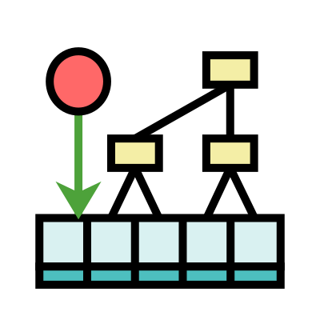

Please note: These descriptions are not final and are subject to change.
Multilevel Deduplication Engine (MDE) is a data representation caching mechanism that is meant to facilitate aggressive caching of redundant data, and operations performed on such redundant data. MDE aims to reduce both the memory footprint as well as the CPU time used by an application for every operation performed on its data when compared to naive storage and operations on it by reducing each unique instance of data to a unique integer identifier, and reducing the cost of performing any bulk operation on data as much as possible. It builds on the following assumptions for some given information system:
MDE finds its main applications in the domain of compilers and code optimization, specifically in the field of data-flow analyses, such as Liveness Analysis and Points-to Analysis.
The current MDE toolset consists of a C++ implementation of the mechanism, and a Python script that generates an automatically set-up interface from a given input description.
MDE assigns a unique number to each unique set that is inserted or computed, which reduces operations, like checking for equality, to a simple integer comparison. In order to prevent duplicate sets, a mapping from the set to the unique integer is stored in a hash table. The set's contents are hashed.
MDE hashes operations like unions, intersections and differences as well, and stores the mapping for each operation (a pair of integers denoting the two operands, to the result, which is another integer) in a separate hash table, allowing for efficient access to already computed information. Other inferences from the operation, such as subset relations are also hashed in order to possibly speed up future operations.
MDE is meant to be extended to fit the needs of a particular use case. The class should be derived and more operations or facilities should be implemented as required if in case the default MDE class does not meet all needs.
This project is still in active development. Please check out the manual to understand the workings and the use-cases of this project in detail.
An obsolete preprint version of the submitted paper for MDE is available here (DOI 10.48550/arXiv.2510.18496). A version of the accompanying artifact to this paper is available at https://github.com/aghorui/lhf-eval.